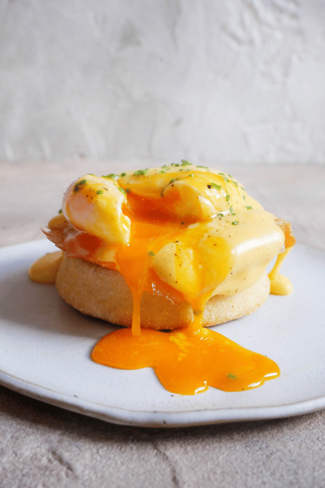

Eggs Benedict

Eggs Benedict is a brunch specialty consisting of hot buttered English muffins, Canadian-style bacon, and poached eggs topped with a rich homemade Hollandaise sauce.
Wonderful for Easter, Mother's Day, or brunch anytime! If you're not a lemon fan, start with 1 tablespoon of lemon juice.
If you like a tangy Hollandaise, you can add the full amount.
What are eggs Benedict?
Eggs Benedict is an American breakfast dish that consists of a split English muffin topped with Canadian bacon, a poached egg, and Hollandaise sauce.
There are conflicting reports about the iconic breakfast’s origins, but most agree it was invented in New York City in the late 1800s (either at Delmonico’s or the Waldorf Hotel).
Ingredients:
For the Hollandaise
- 4 Egg Yolks
- 3 1/2 tablespoons of Lemon juice
- 1 Tablespoon Water
- 1/8 Teaspoon Worcestershire sauce
- 1 pinch ground white pepper
- 1 cup melted butter
- Salt to taste
For the eggs Benedict
- 1 teaspoon White Vinegar
- 8 Eggs
- 8 strips Canadian Bacon
- 4 split English Muffin
- 2 tablespoons of softened butter
Directions
Step 1
To make the Hollandaise: Whisk egg yolks, lemon juice, 1 tablespoon of water, Worcestershire sauce, and white pepper in the top of a double boiler over simmering water. Add melted butter, 1 or 2 tablespoons at a time, while whisking yolks constantly.
If Hollandaise begins to get too thick, add a teaspoon or two of hot water. Continue whisking until all of the butter is incorporated.
Whisk in salt, then remove from heat. Place a lid on the pan to keep sauce warm.
Step 2
To poach the eggs: Fill a large saucepan with 2 to 3 inches of water and bring to a boil. Reduce heat to medium-low, pour in vinegar, and keep water at a gentle simmer.
Crack an egg into a small bowl then gently slip egg into simmering water, holding the bowl just above the surface of water. Repeat with the remaining eggs.
Cook eggs until whites are firm and yolks have thickened but are not hard, 2 ½ to 3 minutes. Remove eggs from water with a slotted spoon, dab on a kitchen towel to remove excess water, and place onto a warm plate.
Step 3
Meanwhile, set an oven rack about 6 inches from the heat source and preheat the oven's broiler. Brown bacon in a medium skillet over medium-high heat.
Step 4
Toast English muffins on a baking sheet under the preheated broiler.
Step 5
To serve eggs Benedict: Spread toasted muffins with softened butter and top each one with a slice of bacon, followed by one poached egg.
Place 2 muffins on each plate and drizzle with Hollandaise sauce. Sprinkle with chopped chives and serve immediately.